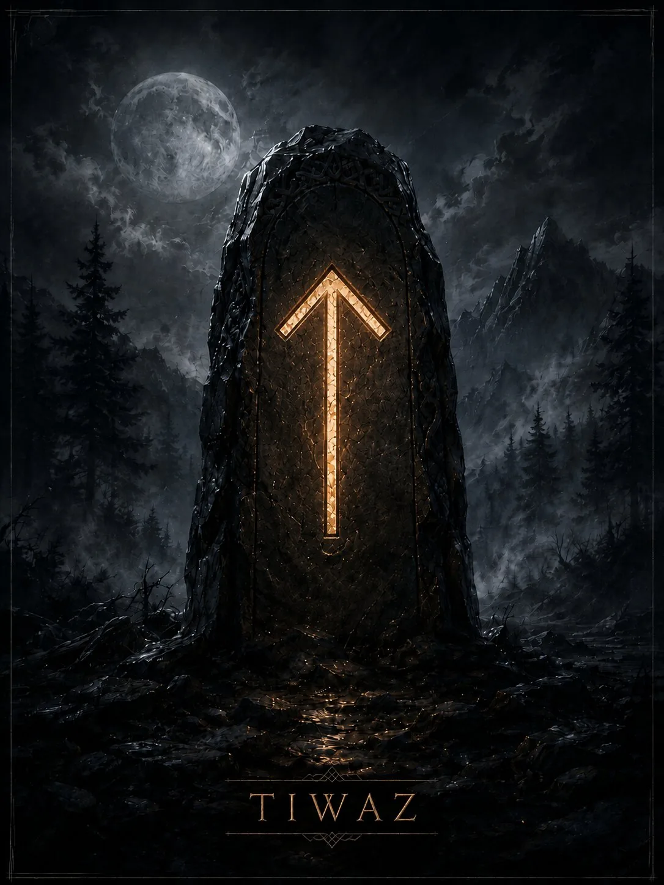

The rune of a goal, principle, discipline, and readiness to pay the price of victory. In modern divination it is associated with fair struggle, responsibility,
Core meaning
The rune of a goal, principle, discipline, and readiness to pay the price of victory. In modern divination it is associated with fair struggle, responsibility,
Historical tradition
The rune’s name is connected with the Germanic deity corresponding to Old Norse Tyr. In the Lay of Sigrdrifa, victory runes are associated with weapons and invoking Tyr, but this literary evidence is not a ready-made system of meanings for every Elder Futhark rune.
- Key meanings: goal, victory, principle, discipline, justice, struggle, responsibility, resolve
Modern divination
These divinatory meanings belong to modern runic practice.
- Positive expression: Purposefulness, fair competition, success through discipline, and readiness to defend a principle.
- Negative expression: Defeat caused by a poor strategy, excessive rigidity, conflict for its own sake, or a price of victory greater than the result.
- Advice: Define the principle for which you are truly prepared to answer, and act consistently.
- Warning: Do not turn justice into a justification for personal aggression.
- Outcome: A result achieved through struggle, discipline, and a clear position; often favorable in competitions and disputes when the basis is strong.
Psychological state
Composure centered on a goal; in the shadow, an inability to retreat even after the struggle has lost its meaning.
Spiritual meaning
The lesson of conscious sacrifice: a price has meaning only when a person understands what they are paying it for.
Upright and reversed positions
Divinatory interpretation and the use of reversed positions belong to modern runic practice. No ancient manual survives for the Elder Futhark that establishes this method of divination as the only correct one. In modern systems, reversed Tiwaz means loss of direction, an unjust confrontation, defeat, refusal of responsibility, or a struggle without inner conviction.
Differences between schools
The connection between the name and Tyr is historically significant; the modern detail of ‘court, victory, masculine core’ is a later divinatory development.
Summary
The rune of a goal, principle, discipline, and readiness to pay the price of victory. In modern divination it is associated with fair struggle, responsibility,
Finances
Competition, a dispute over a resource, legal or contractual protection of an interest, or profit through an active position.
Work
Leadership, competition, responsibility, an examination or contest, or a struggle for a position.
Relationships
Direct intentions and loyalty to principles; in the shadow, a struggle for power and a desire to prove oneself right.
Family and home
A need to establish fair rules, defend a boundary, or make a responsible decision.
Rune as a description of a person
A principled, disciplined, competitive person who needs to respect themselves for their own choice.
- Thoughts: They assess what is right and which result is worth the effort.
- Feelings: Restrained but stable; respect matters more than outward romance.
- Actions: They will fight, defend their position, keep a promise, and take responsibility.
Modern magical meaning
This is modern esoteric practice, not a historically attested tradition.
- Modern magical interpretation: Victory, directed will, discipline, and protection of a legitimate interest.
- Purposes: Competitions, negotiations from a firm position, overcoming resistance, or securing a goal.
- Strengthens: Purposefulness, a direct vector, and the ability to complete an action.
- Weakens: Hesitation and aimless dissipation.
- Risk: Making a formula excessively confrontational and turning pursuit of a goal into a fight with everyone.
Rune in formulas and staves
Tiwaz often sets the goal and vector of will: Tiwaz+Sowilo — victory; Tiwaz+Raidho — disciplined progress; Tiwaz+Jera — a deserved result after a struggle.
Esoteric interpretation
In modern esoteric interpretation
In diagnostics, a strained Tiwaz is sometimes associated with a targeted conflict influence or suppression of the will.
Possible everyday explanation
Alternative explanation
An everyday alternative: open competition, a legal or business dispute, an authoritarian person, a struggle for status, or an inner conflict of principles.
Characteristic combinations
- Tiwaz + Sowilo: Victory, leadership, and a strong result.
- Tiwaz + Nauthiz: Duty and discipline under pressure.
- Tiwaz + Gebo: An agreement or union that requires honest rules.
Rune in formulas and staves
Tiwaz often sets the goal and vector of will: Tiwaz+Sowilo — victory; Tiwaz+Raidho — disciplined progress; Tiwaz+Jera — a deserved result after a struggle.
Divinatory, magical, and diagnostic meanings belong to modern runic practice. The historical section draws on rune poems and epigraphy. The material is for reference and entertainment.